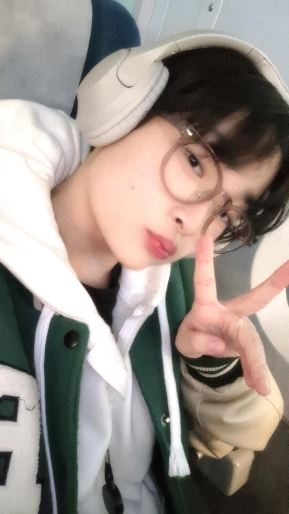
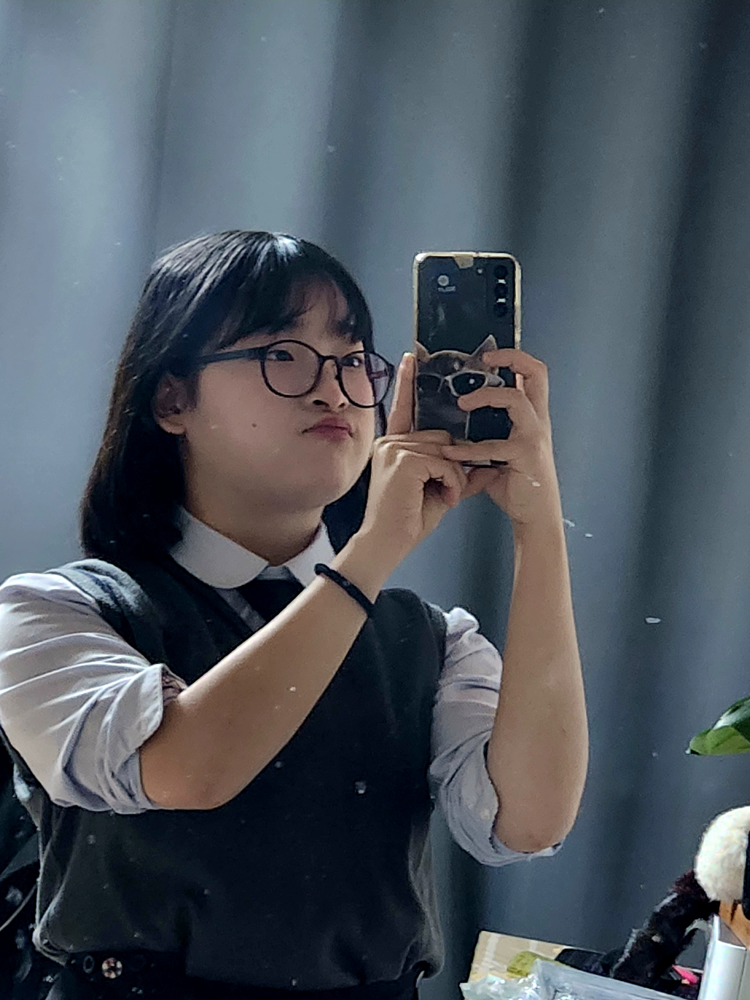
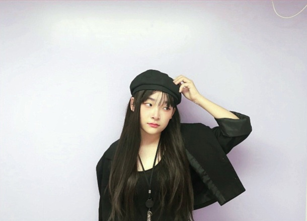

Who am I?

What's my hobbit
찾으러다니기 📸
Ivy's Production review

안녕하세요! 이번에 ‘Hello:Ivy’ 제작하게 된 유현입니다.
해당 페이지는 웹 포트폴리오이며 제가 그동안 공부한 것이나 해보고 싶은 것들을 모아놓았습니다.
또한 이번 기회에 처음으로 Web Design과 Frontend를 배우면서
다양한 기술을 익히며 새로운 여정의 첫 발자국이 되었습니다!
이번 기회를 통해서 UI/UX에 대해 더 깊게 알게 되었고, 생각보다 많은 것을 알게 되었습니다.
특히, 디자인을 하고 나서 구현을 하는 단계에서 많은 오류가 있었고 코드 작성 시 발생한 오류들을 해결하는 과정에서
디자인을 하는 것과 구현을 하는 것에 대해 타협점을 찾는 것이 가장 중요한 것을 깨달았고, 균형성 있게 하는 부분이 어려웠습니다.
하지만, 이러한 경험을 통해서 사용자 경험을 고려한 접근 방식을 배우며 웹 개발에 대한 이해가 깊어졌습니다.
이 경험을 바탕으로 더욱 발전할 수 있도록 계속해서 새로운 기술과 트렌드를 배우며 성장할 계획입니다.

포트폴리오에서 가장 자랑스러운 부분은 그동안 제가한 프로젝트를 적은 부분입니다.
단순한 기술 나열에서 벗어나, 제가 개발자로서 가치를 창출하는 방법을 명확히 전달할 수 있었다고 생각합니다.
또 이 포트폴리오를 구현하고 정리하면서 많은 것을 배웠고 성장했다는 것을 느꼈습니다.
내가 가진 기술과 경험이 타인에게 어떻게 비춰질지를 고민하며 콘텐츠를 구성했고 모르는 것을 계속해서 공부하고 또 공부한 것이 보였기 때문입니다.
더불어, 교훈이나 느낀 점을 정리하며 스스로의 발전 과정을 되돌아볼 수 있었습니다.